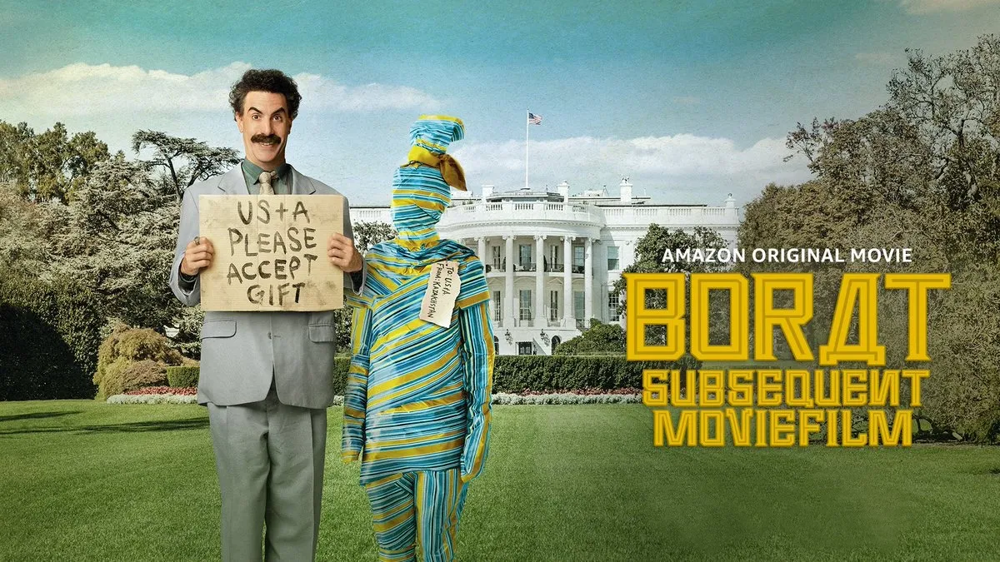

Sacha Baron Cohen regresa como Borat, el periodista ficticio de Kazajistán, en esta secuela satírica. Borat viaja a América para ofrecer un regalo a la administración Trump, y se encuentra en una serie de situaciones cómicas y políticamente incorrectas.
